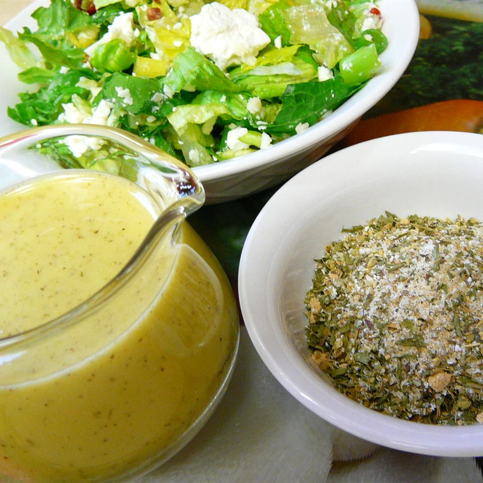

Italian Dressing Mix

This Italian salad dressing recipe shows you how to make a dry dressing mix that replaces store-bought! It makes a great gift for co-workers and friends. -Allrecipes Member
Ingredients:
- 2 tablespoons dried oregano
- 2 tablespoons salt
- 1 tablespoon dried parsley
- 1 tablespoon garlic salt
- 1 tablespoon onion powder
- 1 tablespoon white powder
- 1 teaspoon white sugar
- 1 teaspoon ground black pepper
- 1 teaspoon dried basil
- 1/4 teaspoon dried thyme
- 1/4 teaspoon celery salt
Steps:
- Mix together oregano, salt, parsley, garlic salt, onion powder, sugar, pepper, basil, thyme, and celery salt in a bowl. Store in a tightly sealed container until ready to use.
- When ready to use, whisk together 2/3 cup canola oil, 1/4 cup white vinegar, 2 tablespoons water, and 2 tablespoons dry Italian dressing mix in a bowl.